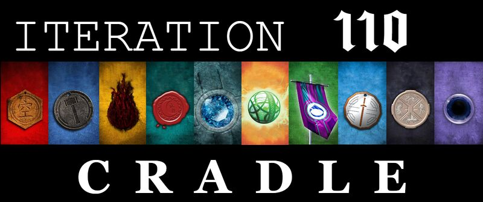

The Cradle Book Series

The Cradle series by Will Wight is a progression-fantasy epic about Wei Shi Lindon, a kid born weak in a world that worships power. In his homeland, strength comes from “madra,” the life energy people use to cultivate powerful abilities. Lindon’s society deems him talentless, but he refuses to accept that fate.
When he’s thrown into a much larger and deadlier world, Lindon becomes obsessed with growing stronger — training, learning new paths, forming bonds with warriors like Yerin, Eithan, Orthos, and others. Together, they climb through realms of power that go from mortal to godlike, facing enemies that can destroy worlds.
The heart of the story is all about relentless self-improvement, loyalty, and ambition — wrapped in wild anime-style battles, clever magic systems, and plenty of humor.